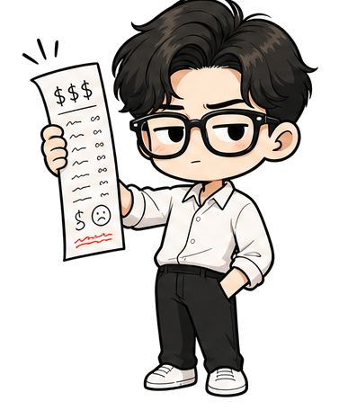

beautiful example
of human progress?
suspicious
business plan?

when someone keeps
handing you useful things...

for FREE?

unbelievably
generous
?
FREE*
video
maps
messaging
invoice
later
the invoice
is just late
on the internet...
usually the
not a gift
exactly
second one